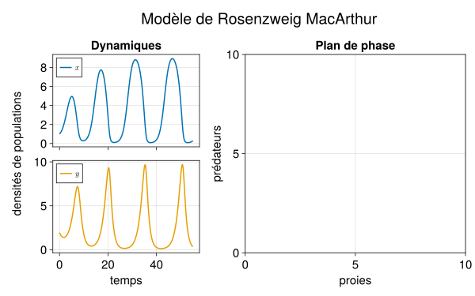

Nous considérons le modèle de dynamique de populations attribué à Rosenzweig et MacArthur (voir Rosenzweig and MacArthur (1963), Turchin (2003), Smith (2008)).
\left\{\begin{array}{l}
\dot x = \displaystyle rx\left(1-\frac{x}{K}\right) - c \frac{x}{h+x} y\\[.3cm]
\dot y = b\displaystyle \frac{x}{h+x} y - m y
\end{array}\right.
\tag{1}
Dynamiques
Il n’y a pas de difficulté particulière à la simulation par rapport au modèle de Lotka Volterra.
Nous utiliserons ici le package de visualisation graphique Makie.jl1 à la place de Plots.jl. Makie.jl permet un contrôle très approfondi des graphiques. Commençons par tracer les dynamiques contre le temps dans une figure simple.
1 entièrement écrit en Julia, présenté comme “le futur” de la représentation graphique avec Julia. Une bonne introduction à Makie.
Nous utiliserons le backend CairoMakie pour la visualisation en 2D.
usingCairoMakie
Un peu comme Matplotlib en Python, Makie définit un triplet FigureAxisPlot : la figure est le conteneur de (éventuellement) plusieurs systèmes d’axes qui contiennent chacun un ou plusieurs graphiques (ligne, point, etc.).
# on crée la figurefig1 =Figure(; backgroundcolor =:transparent, size = (600,400), fontsize =18,)# on crée un système d'axes en position [1,1] dans la figureax1 =Axis( fig1[1,1]; xlabel ="temps", ylabel ="densités de populations", title ="Modèle de Rosenzweig MacArthur",)# on trace la population x contre le temps sur le système d'axe ax1lines!( ax1, sol_rma.time, sol_rma.x; linewidth =2, linestyle =:solid, label = L"x(t)", # formule Latex dans la chaine de caractère)# on rajoute la population ylines!( ax1, sol_rma.time, sol_rma.y; linewidth =2, linestyle =:solid, label = L"y(t)",)# légendeaxislegend(position =:lt) # position left top# on affiche la figure, pas de display() icifig1
Figure 1: Une première figure avec Makie.jl
Dynamiques et plan de phase
Préparation de la figure
Nous allons maintenant tracer un graphique plus complexe comprenant en colonne de droite les dynamiques des proies et des prédateurs sur deux lignes et en colonne de gauche le plan de phase. Préparons la figure et les systèmes d’axes.
# figurefig2 =Figure(; backgroundcolor =:transparent, size = (800,500), fontsize =20,)# 3 systèmes d'axes# position 1e ligne 1e colonneax21 =Axis(fig2[1,1]; title ="Dynamiques")# position 2e ligne 1e colonneax22 =Axis(fig2[2,1]; xlabel ="temps")ax23 =Axis( fig2[:,2]; # position toutes les lignes, 2e colonne xlabel ="proies", ylabel ="prédateurs", title ="Plan de phase",)# on agrandi un peu la deuxième colonne de la figurecolsize!(fig2.layout, 2, Auto(1.5))# ajout d'un titresupertitle =Label( fig2[0, :], # position ligne "0" toutes les colonnes"Modèle de Rosenzweig MacArthur"; fontsize =26,)# ajout d'un label d'axes commun à la première colonnesideinfo =Label( fig2[1:2, 0], # position toutes les lignes, 1e colonne"densités de populations"; rotation =π/2, # \pi + TAB, pi/2 fonctionne aussi ici)# on affiche la figurefig2
Dynamiques contre le temps
On rajoute les dynamiques :
# la courbe de dynamique de x sur ax21lines!( ax21, sol_rma.time, sol_rma.x; color =Cycled(1), # pick color 1 in the colorcycle linewidth =2, linestyle =:solid, label = L"x",)# légende pour ce système d'axeaxislegend(ax21, position =:lt, labelsize =14)# la courbe de dynamique de y sur ax22lines!( ax22, sol_rma.time, sol_rma.y; color =Cycled(2), linewidth =2, linestyle =:solid, label = L"y",)# légende pour ce système d'axeaxislegend(ax22, position =:lt, labelsize =14)# on enlève les labels de l'axe des x de ax21 (redondants)hidexdecorations!(ax21, ticks =false)# affiche la figurefig2

Plan de phase
Passons maintenant au plan de phase dans le dernier système d’axes. Commençons par les isoclines nulles de \dot x et \dot y :
# calcul des isoclines nulles# vecteurs pour le plotxplot =LinRange(0.0, K+.1, 30)yplot = xplot# isoclines nulles de xdotnull_x_x =ones(length(yplot)).*0# x = 0 isocline nulle de xdotnull_x_y = [r/c*(h+x)*(1-x/K) for x in xplot] # y = f(x) isocline nulle de xdot# isoclines nulles de ydotnull_y_y =ones(length(xplot)).*0# y = 0 isocline nulle de ydotnull_y_x = [m*h/(b-m) for x in yplot] # x = mh/(b-m) isocline nulle de ydot# tracé des isoclines nulle de xlines!( ax23, null_x_x, yplot; color =Cycled(2), linewidth =2, linestyle =:solid,)lines!( ax23, xplot, null_x_y; color =Cycled(2), linewidth =2, linestyle =:solid, label = L"nullcline de $x$",)# tracé des isoclines nulle de ylines!( ax23, xplot, null_y_y; color =Cycled(3), linewidth =2, linestyle =:solid,)lines!( ax23, null_y_x, yplot; color =Cycled(3), linewidth =2, linestyle =:solid, label = L"nullcline de $y$",)
Puis nous ajoutons les équilibres:
# tracé des équilibres# équilibre d'extinctionscatter!( # scatter pour des points ax23,0,0; color =Cycled(4), label = L"équilibres$$",)# prey onlyscatter!(ax23, K, 0, color =Cycled(4))# équilibre de coexistenceeq_coex = [m*h/(b-m), r/c*(h+m*h/(b-m))*(1-m*h/(b-m)/K)]scatter!(ax23, eq_coex[1], eq_coex[2]; color =Cycled(4))
Pour tracer le champs de vecteurs, nous créons deux vecteurs de coordonnées x et y, et calculons par compréhension de liste des matrices de taille correspondante indiquant les composantes x et y des vecteurs vitesse. Les vecteurs de coordonnées et les matrices de composante des vitesses sont ensuite passées comme argument à la fonction arrows.
# champs de vecteurscale =10# il faut mettre à l'échelle sinon on voit rienxrange =range(1, 10, length=11)yrange =range(1. ,10, length=11)# composantes des vecteurs vitesses par compréhension de listederx = [rma([x y], par_rma, 0)[1]/scale for x in xrange, y in yrange]dery = [rma([x y], par_rma, 0)[2]/scale for x in xrange, y in yrange]# champs de vecteursarrows!( ax23, xrange, # coordonnée x du début d'une flèche yrange, # coordonnée y du début d'une flèche derx, # x fin de la flèche (relativement au debut) dery; # y fin de la flèche (relativement au debut) color =:lightgray, arrowsize =10,)
Caution
Dans les compréhensions de listes à plusieurs variables/itérateurs, la syntaxe a son importance:
[1 for x in xrange, y in yrange] crée un array de taille length(xrange) par length(yrange)
[1 for x in xrange for y in yrange] crée un vecteur de taille length(xrange) + length(yrange)
et enfin la trajectoire :
# trajectoire dans le plan de phaselines!( ax23, sol_rma.x, sol_rma.y; color =Cycled(1), linewidth =2, linestyle =:solid, label = L"trajectoire $$",)# ajuste l'espacement des colonnes et lignescolgap!(fig2.layout, 20)rowgap!(fig2.layout, 20)# affiche la figurefig2
Figure 2: Une figure plus complexe avec Makie.jl
On peut sauvegarder la figure dans différents formats (e.g. png, pdf)
Pour finir, nous allons tracer le diagramme de bifurcation du modèle de Rosenzweig MacArthur: asymptotiques des prédateurs y^* en fonction de K, en identifiant les bifurcations transcritique et de Hopf vues en cours, et en estimant et représentant les extremas du cycle limite apparaissant pour K grand.
Pour rappel, il y a 3 situations asymptotiques distinctes pour le modèle de Rosenzweig MacArthur :
si : 0<K<\displaystyle\frac{mh}{b-m} : les prédateurs s’éteignent et les proies convergent vers K, l’équilibre d’extinction des deux populations est instable.
si : \displaystyle\frac{mh}{b-m} <K< h+\frac{2mh}{b-m} : proies et prédateurs co-existent à un équilibre globalement asymptotiquement stable, l’équilibre d’extinction des prédateurs est instable, l’équilibre d’extinction des deux populations est instable.
si : h+\displaystyle\frac{2mh}{b-m}<K: proies et prédateurs co-existent le long d’un cycle limite globalement asymptotiquement stable, l’équilibre d’extinction des prédateurs est instable, l’équilibre d’extinction des deux populations est instable.
Dans un premier temps nous allons calculer et représenter les différents équilibres et leur stabilité dans le plan (K, y), puis nous calculerons et rajouterons une représentation du cycle limite.
Equilibres
Nous faisons une boucle sur les valeurs de K et calculons les équilibres.
K_step =0.1# before transcriticalK_plot1 =0:K_step:m*h/(b-m)y_eq01 =ones(length(K_plot1)).*0# between transcritical and HopfK_plot2 = m*h/(b-m):K_step:h+2*m*h/(b-m)y_eq02 =ones(length(K_plot2)).*0y_co2 = [r/c*(h+m*h/(b-m))*(1-m*h/(b-m)/K_p) for K_p in K_plot2]# above HopfK_plot3 = h+2*m*h/(b-m)-K_step/5:(K_step/10):8y_eq03 =ones(length(K_plot3)).*0y_co3 = [r/c*(h+m*h/(b-m))*(1-m*h/(b-m)/K_p) for K_p in K_plot3]
Et nous commençons le tracé de la figure :
Code
# création d'une figurefig3 =Figure(; backgroundcolor =:transparent, size = (600,400), fontsize =18,)# on crée un système d'axes en position [1,1] dans la figureax31 =Axis( fig3[1,1]; xlabel = L"capacité de charge $K$",ylabel = L"densité de population $y^*$", title ="Diagramme de bifurcations pour le\n modèle de Rosenzweig MacArthur",)# on trace la population x su ax31# left of transcriticallines!( ax31, K_plot1, y_eq01; color =Cycled(1), linewidth =2, label = L"branche stable$$", # $$to keep the latex font)# between transcritical and Hopflines!( ax31, K_plot2, y_eq02; color =Cycled(2), linewidth =2, label = L"branche instable$$",)lines!( ax31, K_plot2, y_co2; color =Cycled(1), linewidth =2,)# right of Hopflines!( ax31, K_plot3, y_eq03; color =Cycled(2), linewidth =2,)lines!( ax31, K_plot3, y_co3; color =Cycled(2), linewidth =2,)fig3
Cycle limite
Pour estimer le cycle limite pour chaque la valeur de K nous allons simuler le modèle pendant un transitoire assez long, puis repartir de cette valeur de l’état, simuler un cycle et récupérer les extremas pour les tracer. Nous utilisons une méthode basée sur remake pour modifier le problème d’intégration2.
# define generic simulation problemrma_pbe =ODEProblem(rma, etat0, t_trans, par_rma)# estimate limit cycle through loop on K@timefor (i, Kc) inenumerate(K_plot3) # loop on (index, K) values of K_plot3 par_rmac = [r, Kc, c, h, b, m] # set parameters# transient initial value problem; remake problem with par = par_rmac rma_trans_pbe =remake(rma_pbe; p = par_rmac)# with such arguments `solve` yields only final value of simulation post_trans2 =solve( rma_trans_pbe; save_everystep =false, save_start =false, abstol=1e-6, reltol=1e-6, )# limit cycle initial value problem; simulation rma_cycle_pbe =remake( rma_pbe; p = par_rmac, u0 = post_trans2[:,1], # initial condition from transient simulation tspan = tspan, saveat = tstep, )# simulation sol_cycle =solve(rma_cycle_pbe; abstol=1e-6, reltol=1e-6)# get the extrema of y, store at index i y_cmin[i] =minimum(sol_cycle[2,:]) y_cmax[i] =maximum(sol_cycle[2,:])end
10.583470 seconds (325.91 M allocations: 24.391 GiB, 13.43% gc time, 10.65% compilation time)
Diagramme de bifurcations final
Finalement, on inclut les branches calculées dans le diagramme de bifurcations.
Code
lines!( ax31, K_plot3, y_cmin; color =Cycled(3), linewidth =2, label = L"cycle limite$$",)lines!( ax31, K_plot3, y_cmax; color =Cycled(3), linewidth =2,)axislegend(ax31, position =:lt, labelsize =14)fig3
Figure 3: Diagramme de bifurcations du modèle de Rosenzweig MacArthur.
That’s all folks!
References
Rosenzweig, M. L., and R. H. MacArthur. 1963. “Graphical Representation and Stability Conditions of Predator-Prey Interactions.”American Naturalist 97: 209–23.
Smith, H. L. 2008. “The Rosenzweig MacArthur Predator Prey Model.”
Turchin, P. 2003. Complex Population Dynamics. Princeton University Press.
---title: "Populations en interaction (2)"---<!-- load local julia environment (freeze package versions) -->```{julia}#| include: false#| eval: true## this cell does not appear in the rendering, but is executed## for reproducibility purposes, we load the local julia environment/project, containing# [13f3f980] CairoMakie v0.11.6# [a93c6f00] DataFrames v1.6.1# [864edb3b] DataStructures v0.18.16# [0c46a032] DifferentialEquations v7.12.0# [e9467ef8] GLMakie v0.9.6# [91a5bcdd] Plots v1.40.0# [f27b6e38] Polynomials v4.0.6# [90137ffa] StaticArrays v1.9.1# [0c5d862f] Symbolics v5.16.1## to share the environment, copy Project.toml and Manifest.toml files in some directory# `activate` the local environment# if necessary `instantiate` to get the correct package versions## to check if some PackageName.jl is used from the local environment## Pkg.status("PackageName")using PkgPkg.activate(".")```## Le modèle de Rosenzweig MacArthur {#sec-rma}Nous considérons le modèle de dynamique de populations attribué à Rosenzweig et MacArthur (voir @Rosenzweig1963, @Turchin2003, @Smith2008).$$\left\{\begin{array}{l}\dot x = \displaystyle rx\left(1-\frac{x}{K}\right) - c \frac{x}{h+x} y\\[.3cm]\dot y = b\displaystyle \frac{x}{h+x} y - m y\end{array}\right.$$ {#eq-rma}### DynamiquesIl n'y a pas de difficulté particulière à la simulation par rapport au modèle de Lotka Volterra.```{julia}#| code-fold: trueusing DifferentialEquationsusing DataFrames# conditions initialesx0 = 1.0y0 = 1.95etat0 = [x0, y0]# paramètresr = 1.0K = 10.0c = 1.0h = 2.0b = 2.0m = 1.0par_rma = [r, K, c, h, b, m]# temps d'integrationtspan = (0.0, 55.0)tstep = .01# définition du modèlefunction rma(u, par, t) r, K, c, h, b, m = par x = u[1]y = u[2] dx = r*x*(1-x/K) - c*x/(h+x)*y dy = b*x/(h+x)*y - m*y return [dx, dy]end# problème d'intégrationprob_rma = ODEProblem( rma, etat0, tspan, par_rma; saveat = tstep,)# intégrationsol_rma = solve(prob_rma, reltol = 1e-6)# dataframesol_rma = DataFrame(sol_rma)rename!(sol_rma, :timestamp => :time, :value1 => :x, :value2 => :y)```Nous utiliserons ici le package de visualisation graphique `Makie.jl`^[entièrement écrit en `Julia`, présenté comme "[le futur](https://medium.com/coffee-in-a-klein-bottle/visualizing-data-with-julia-using-makie-7685d7850f06)" de la représentation graphique avec `Julia`. Une bonne [introduction à Makie](https://juliadatascience.io/DataVisualizationMakie).] à la place de `Plots.jl`. `Makie.jl` permet un contrôle très approfondi des graphiques. Commençons par tracer les dynamiques contre le temps dans une figure simple.Nous utiliserons le backend `CairoMakie` pour la visualisation en 2D.```{julia}using CairoMakie```Un peu comme `Matplotlib` en `Python`, `Makie` définit un triplet `FigureAxisPlot` : la figure est le conteneur de (éventuellement) plusieurs systèmes d'axes qui contiennent chacun un ou plusieurs graphiques (ligne, point, etc.).```{julia}#| output: true#| label: fig-dyn-rma#| fig-cap: Une première figure avec `Makie.jl`# on crée la figurefig1 = Figure(; backgroundcolor = :transparent, size = (600,400), fontsize = 18,)# on crée un système d'axes en position [1,1] dans la figureax1 = Axis( fig1[1,1]; xlabel = "temps", ylabel = "densités de populations", title = "Modèle de Rosenzweig MacArthur",)# on trace la population x contre le temps sur le système d'axe ax1lines!( ax1, sol_rma.time, sol_rma.x; linewidth = 2, linestyle = :solid, label = L"x(t)", # formule Latex dans la chaine de caractère)# on rajoute la population ylines!( ax1, sol_rma.time, sol_rma.y; linewidth = 2, linestyle = :solid, label = L"y(t)",)# légendeaxislegend(position = :lt) # position left top# on affiche la figure, pas de display() icifig1```### Dynamiques et plan de phase#### Préparation de la figureNous allons maintenant tracer un graphique plus complexe comprenant en colonne de droite les dynamiques des proies et des prédateurs sur deux lignes et en colonne de gauche le plan de phase. Préparons la figure et les systèmes d'axes.```{julia}#| output: true# figurefig2 = Figure(; backgroundcolor = :transparent, size = (800,500), fontsize = 20,)# 3 systèmes d'axes# position 1e ligne 1e colonneax21 = Axis(fig2[1,1]; title = "Dynamiques")# position 2e ligne 1e colonneax22 = Axis(fig2[2,1]; xlabel = "temps")ax23 = Axis( fig2[:,2]; # position toutes les lignes, 2e colonne xlabel = "proies", ylabel = "prédateurs", title = "Plan de phase",)# on agrandi un peu la deuxième colonne de la figurecolsize!(fig2.layout, 2, Auto(1.5))# ajout d'un titresupertitle = Label( fig2[0, :], # position ligne "0" toutes les colonnes "Modèle de Rosenzweig MacArthur"; fontsize = 26,)# ajout d'un label d'axes commun à la première colonnesideinfo = Label( fig2[1:2, 0], # position toutes les lignes, 1e colonne "densités de populations"; rotation = π/2, # \pi + TAB, pi/2 fonctionne aussi ici)# on affiche la figurefig2```#### Dynamiques contre le tempsOn rajoute les dynamiques :```{julia}#| output: true# la courbe de dynamique de x sur ax21lines!( ax21, sol_rma.time, sol_rma.x; color = Cycled(1), # pick color 1 in the colorcycle linewidth = 2, linestyle = :solid, label = L"x",)# légende pour ce système d'axeaxislegend(ax21, position = :lt, labelsize = 14)# la courbe de dynamique de y sur ax22lines!( ax22, sol_rma.time, sol_rma.y; color = Cycled(2), linewidth = 2, linestyle = :solid, label = L"y",)# légende pour ce système d'axeaxislegend(ax22, position = :lt, labelsize = 14)# on enlève les labels de l'axe des x de ax21 (redondants)hidexdecorations!(ax21, ticks = false)# affiche la figurefig2```#### Plan de phasePassons maintenant au plan de phase dans le dernier système d'axes. Commençons par les isoclines nulles de $\dot x$ et $\dot y$ :```{julia}# calcul des isoclines nulles# vecteurs pour le plotxplot = LinRange(0.0, K+.1, 30)yplot = xplot# isoclines nulles de xdotnull_x_x = ones(length(yplot)).*0# x = 0 isocline nulle de xdotnull_x_y = [r/c*(h+x)*(1-x/K) for x in xplot] # y = f(x) isocline nulle de xdot# isoclines nulles de ydotnull_y_y = ones(length(xplot)).*0 # y = 0 isocline nulle de ydotnull_y_x = [m*h/(b-m) for x in yplot] # x = mh/(b-m) isocline nulle de ydot# tracé des isoclines nulle de xlines!( ax23, null_x_x, yplot; color = Cycled(2), linewidth = 2, linestyle = :solid,)lines!( ax23, xplot, null_x_y; color = Cycled(2), linewidth = 2, linestyle = :solid, label = L"nullcline de $x$",)# tracé des isoclines nulle de ylines!( ax23, xplot, null_y_y; color = Cycled(3), linewidth = 2, linestyle = :solid,)lines!( ax23, null_y_x, yplot; color = Cycled(3), linewidth = 2, linestyle = :solid, label = L"nullcline de $y$",)```Puis nous ajoutons les équilibres:```{julia}# tracé des équilibres# équilibre d'extinctionscatter!( # scatter pour des points ax23,0,0; color = Cycled(4), label = L"équilibres$$",)# prey onlyscatter!(ax23, K, 0, color = Cycled(4))# équilibre de coexistenceeq_coex = [m*h/(b-m), r/c*(h+m*h/(b-m))*(1-m*h/(b-m)/K)]scatter!(ax23, eq_coex[1], eq_coex[2]; color = Cycled(4))```Pour tracer le champs de vecteurs, nous créons deux vecteurs de coordonnées `x` et `y`, et calculons par compréhension de liste des matrices de taille correspondante indiquant les composantes `x` et `y` des vecteurs vitesse. Les vecteurs de coordonnées et les matrices de composante des vitesses sont ensuite passées comme argument à la fonction `arrows`.```{julia}# champs de vecteurscale = 10 # il faut mettre à l'échelle sinon on voit rienxrange = range(1, 10, length=11)yrange = range(1. ,10, length=11)# composantes des vecteurs vitesses par compréhension de listederx = [rma([x y], par_rma, 0)[1]/scale for x in xrange, y in yrange]dery = [rma([x y], par_rma, 0)[2]/scale for x in xrange, y in yrange]# champs de vecteursarrows!( ax23, xrange, # coordonnée x du début d'une flèche yrange, # coordonnée y du début d'une flèche derx, # x fin de la flèche (relativement au debut) dery; # y fin de la flèche (relativement au debut) color = :lightgray, arrowsize = 10,)```::: {.callout-caution}Dans les compréhensions de listes à plusieurs variables/itérateurs, la syntaxe a son importance:- `[1 for x in xrange, y in yrange]` crée un array de taille `length(xrange)` par `length(yrange)`- `[1 for x in xrange for y in yrange]` crée un vecteur de taille `length(xrange)+ length(yrange)`:::et enfin la trajectoire :```{julia}#| output: true#| label: fig-rma-pplane#| fig-cap: Une figure plus complexe avec `Makie.jl`# trajectoire dans le plan de phaselines!( ax23, sol_rma.x, sol_rma.y; color = Cycled(1), linewidth = 2, linestyle = :solid, label = L"trajectoire $$",)# ajuste l'espacement des colonnes et lignescolgap!(fig2.layout, 20)rowgap!(fig2.layout, 20)# affiche la figurefig2```On peut sauvegarder la figure dans différents formats (e.g. png, pdf)```{julia}save("rma_fig.png", fig2)save("rma_fig.pdf", fig2)```### Diagramme de bifurcationsPour finir, nous allons tracer le diagramme de bifurcation du modèle de Rosenzweig MacArthur: asymptotiques des prédateurs $y^*$ en fonction de $K$, en identifiant les bifurcations transcritique et de Hopf vues en cours, et en estimant et représentant les extremas du cycle limite apparaissant pour $K$ grand.Pour rappel, il y a 3 situations asymptotiques distinctes pour le modèle de Rosenzweig MacArthur :- si : $0<K<\displaystyle\frac{mh}{b-m}$ : les prédateurs s'éteignent et les proies convergent vers $K$, l'équilibre d'extinction des deux populations est instable.- si : $\displaystyle\frac{mh}{b-m} <K< h+\frac{2mh}{b-m}$ : proies et prédateurs co-existent à un équilibre globalement asymptotiquement stable, l'équilibre d'extinction des prédateurs est instable, l'équilibre d'extinction des deux populations est instable.- si : $h+\displaystyle\frac{2mh}{b-m}<K$: proies et prédateurs co-existent le long d'un cycle limite globalement asymptotiquement stable, l'équilibre d'extinction des prédateurs est instable, l'équilibre d'extinction des deux populations est instable.Dans un premier temps nous allons calculer et représenter les différents équilibres et leur stabilité dans le plan $(K, y)$, puis nous calculerons et rajouterons une représentation du cycle limite.#### EquilibresNous faisons une boucle sur les valeurs de $K$ et calculons les équilibres.```{julia}#| output: falseK_step = 0.1# before transcriticalK_plot1 = 0:K_step:m*h/(b-m)y_eq01 = ones(length(K_plot1)).*0# between transcritical and HopfK_plot2 = m*h/(b-m):K_step:h+2*m*h/(b-m)y_eq02 = ones(length(K_plot2)).*0y_co2 = [r/c*(h+m*h/(b-m))*(1-m*h/(b-m)/K_p) for K_p in K_plot2]# above HopfK_plot3 = h+2*m*h/(b-m)-K_step/5:(K_step/10):8y_eq03 = ones(length(K_plot3)).*0y_co3 = [r/c*(h+m*h/(b-m))*(1-m*h/(b-m)/K_p) for K_p in K_plot3]```Et nous commençons le tracé de la figure :```{julia}#| code-fold: true#| output: true# création d'une figurefig3 = Figure(; backgroundcolor = :transparent, size = (600,400), fontsize = 18,)# on crée un système d'axes en position [1,1] dans la figureax31 = Axis( fig3[1,1]; xlabel = L"capacité de charge $K$", ylabel = L"densité de population $y^*$", title = "Diagramme de bifurcations pour le\n modèle de Rosenzweig MacArthur",)# on trace la population x su ax31# left of transcriticallines!( ax31, K_plot1, y_eq01; color = Cycled(1), linewidth = 2, label = L"branche stable$$", # $$ to keep the latex font)# between transcritical and Hopflines!( ax31, K_plot2, y_eq02; color = Cycled(2), linewidth = 2, label = L"branche instable$$",)lines!( ax31, K_plot2, y_co2; color = Cycled(1), linewidth = 2,)# right of Hopflines!( ax31, K_plot3, y_eq03; color = Cycled(2), linewidth = 2,)lines!( ax31, K_plot3, y_co3; color = Cycled(2), linewidth = 2,)fig3```#### Cycle limitePour estimer le cycle limite pour chaque la valeur de $K$ nous allons simuler le modèle pendant un transitoire assez long, puis repartir de cette valeur de l'état, simuler un cycle et récupérer les extremas pour les tracer. Nous utilisons une méthode basée sur `remake` pour modifier le problème d'intégration^[voir aussi l'[annexe](annexe_integrator.qmd)].```{julia}# "long" transient integration timet_trans = (0.0, 8000.0)# for storagey_cmin = zero(K_plot3)y_cmax = zero(K_plot3)``````{julia}#| output: true# define generic simulation problemrma_pbe = ODEProblem(rma, etat0, t_trans, par_rma)# estimate limit cycle through loop on K@timefor (i, Kc) in enumerate(K_plot3) # loop on (index, K) values of K_plot3 par_rmac = [r, Kc, c, h, b, m] # set parameters# transient initial value problem; remake problem with par = par_rmac rma_trans_pbe = remake(rma_pbe; p = par_rmac)# with such arguments `solve` yields only final value of simulation post_trans2 = solve( rma_trans_pbe; save_everystep = false, save_start = false, abstol=1e-6, reltol=1e-6, )# limit cycle initial value problem; simulation rma_cycle_pbe = remake( rma_pbe; p = par_rmac, u0 = post_trans2[:,1], # initial condition from transient simulation tspan = tspan, saveat = tstep, )# simulation sol_cycle = solve(rma_cycle_pbe; abstol=1e-6, reltol=1e-6)# get the extrema of y, store at index i y_cmin[i] = minimum(sol_cycle[2,:]) y_cmax[i] = maximum(sol_cycle[2,:])end```#### Diagramme de bifurcations finalFinalement, on inclut les branches calculées dans le diagramme de bifurcations.```{julia}#| output: true#| code-fold: true#| label: fig-bifurcation-rma#| fig-cap: Diagramme de bifurcations du modèle de Rosenzweig MacArthur.lines!( ax31, K_plot3, y_cmin; color = Cycled(3), linewidth = 2, label = L"cycle limite$$",)lines!( ax31, K_plot3, y_cmax; color = Cycled(3), linewidth = 2,)axislegend(ax31, position = :lt, labelsize = 14)fig3```\That’s all folks!